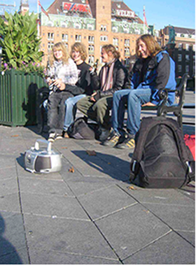
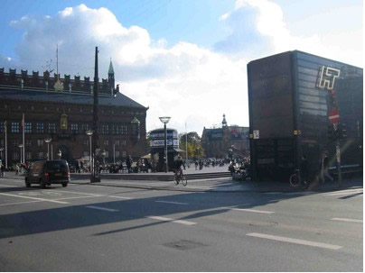
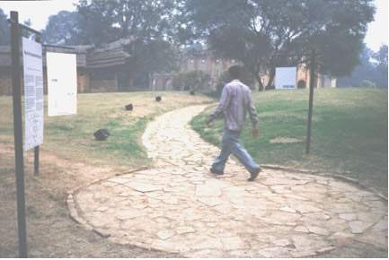
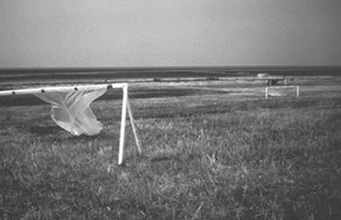
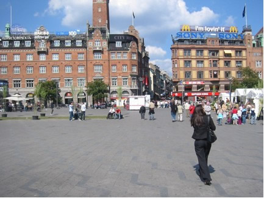

|
Speaking Volumes
by Brandon LaBelle
alternate format- speaking volumes .pdf
Taken one bright wintry day in the main town square in Copenhagen, during a random stroll, with various errands on my mind. Coming upon this group of friends, of travellers, I was moved by their joyful presence. Full of smiles and glee, the group - who I now glimpse as a kind of band, that is, players in a group dynamic, on the road and somehow off it - seem to be spending their time in the midst of celebration: I imagine them on a private adventure, journeying outside their frame of reference, on the edge, with whimsy as their guide. An ordinary day made special. Coming upon this group, something else intervened, a presence difficult to locate in the photograph, to underscore, but which is really at the fore. To draw attention to this buried presence, we can point to the ghetto blaster in the lower corner of the image. The ghetto blaster hints at another layer to this captured moment, and at the same time, it is really the heart of the image, because like any band the presence of music operates as life-blood, the goal and the directive, the unspoken oath and the elusive bond that comes to cohere into a collective voice- granting them the boldness to identify themselves as collective . The band is "singular plural" if there ever was one. Singularity seeping into disjointed and reworked bodies, where one limb is another's, choreographed into an elaborate movement turning matter into energy, motion into soundwave, which is always more than wave, more like force raised to the X-power of any given material. The band is molecular, cohering through musical power. Glimpsing this band, this collective voice, on that sunny day I heard their music in the form of laughter and smiles jumping out of the photographic frame through the ghetto blaster and its volumetric persistence. Tuned to some pop radio station and turned up loud, the blaster announces the group and their moment, as an amplification of their decision to spend day here, like this: the blaster is their musicality raising singular lives to the power of collective adventure, twining individual breaths into sonic movement.
What brings me to this can be found in the image of the ghetto blaster itself, and the fact that it is turned away, pointing not toward the group but away to face the multitude there in the town square. The blaster is their public advertisement. This fact casts the group as band, as collective presence standing out, as a form of statement - they have something to share, and what they share can not be contained, it must seep out, blast itself across the city. Like any band, they long for the stage, because a stage speaks volumes. What they advertise, what is blasted out, is nothing more than pure presence - the blaster accentuates, by being overwhelmingly loud, their adventure and its realization.
At the time, I simply took this photograph, in a friendly gesture, and kept walking, back through the square and onto my errands. But when I turned, and began to walk, I kept listening, I kept hearing the band, their message carrying itself behind me, creeping up on me, and hanging on, catching hold of my heels like an audible vapour. While walking I began to carry along their radiophonic ghost, keeping it alive in my ear, in my auditory thinking ( their smiling made me smile ...). Arriving at the other side of the square, I could still hear their music, at which point I decided to measure their performance, to locate the point where their volume would trail out into the city's sea of noise. This second photograph, here, was where I turned back to register the last molecular movement of their presence, where the trail of their voice faded out, and their music was submerged by the city. 
Located there, in the center of the image, near the distant trees full of yellowing leaves, the group sat and, at the same time, they were here at this farthest point of amplified sound, of molecular movement, of air pressure turned radical expenditure. Between here and there, a space opened up, something tangible yet difficult to locate, to sustain and build. A space nonetheless, one defined by a sudden movement, the appearance of a group of friends on an ordinary day taking hold of an unexpected stage. It is this space, between the farthest point away and the closest instant of contact on which I want to dwell, for this sonic-space is where sound may occupy a given location, while in the same movement, casting that space as energetic . To turn toward sound then is to recognize neither its source nor the final moment when it arrives at the ear, but the journey between, where city centre becomes performance space, where ghetto blaster becomes sound installation, and where space becomes not an empty void but a dynamic relation.
Public Audio
Following this dynamic relation, of sound and its public audibility, of amplification and its difficult sociality, leads to recognize on some level that sound is always a kind of intervention. It cuts into the given situation, interrupting with its own sonorous pronouncement the existing scene. Thus, we might hear in sound, and by extension the spaces of noise, a softening of the presumed dichotomy of order and disorder, composition and its unravelling, sociality and its terms of commonality, for sound by nature is both an order and its own upheaval. It points to a condition by which stability is built from an internal incorporation of movement, eruption, and mutation. To always intervene is to suggest that intervention is more a condition of moving through different states of energy or intensity. As Aden Evans suggests, "sound is the difference of difference." In short, sound never arrives on a scene devoid of an already existing dynamic, for sound is never static.
To trace out sound and its process of intervention I want to look at sound art, and in particular, forms of sound art that move overtly toward the public realm. To move from the space of the art gallery to the realm of public space is immediately to conjure various tensions, histories, and possibilities. While it is apparent that art may find its place within public space, it is equally apparent that it does so with a certain amount of aggression (intentional or not). For we might ask: does the public realm need art?
Various historical moments have seen art incorporated into the public realm as propaganda, as in the Russian Revolution of 1917, or as a mode of public decoration or ornamentation, as seen in the Percent for Art programs begun in the 1960s in the United States. Shadowing such legacies--from governmental propaganda to corporate design--we might point toward the general neo avant-garde ethos of the 1960s, which progressively sought the public through performance, installation, sound, and happening to overcome the limitations of art's representational guise. To get at the heart of the real was to also get at the heart of the public realm. From Alison Knowles performing her Street Piece in Soho in 1962, which asks "Make something in the street and give it away", or her Color Music series (1963), which appropriates the street as a surface for printing, to Milan Knizak playing cello on his back in the streets of Prague (1962), which played havoc with class symbols espoused by the Communist state, art was an aesthetic and performative surprise disrupting the humdrum rhythms of public life. Art was a kind of unofficial intrusion onto public space
In such public performances the use of sound can be heard as attraction and repulsion, whereby public appreciation is coupled with annoyance. Both of which may exist side by side in a state of compromise in front of the performing body (as in Knizak's unabashedly poor cello playing), which is understood as a temporal presence, that is, a momentary harangue onto the movements of daily life that may enrich or degrade (depending on your perspective) that life. Nevertheless, sound's presence within public space must be heard to raise the ante on art's public presentation. For as we know, sound carries a complex and dynamic punch that enthrals while potentially eliciting anger. It does so by always enacting a form of intrusion of a very complex nature, for sound invades through a seemingly subtle play while digging deep into the nerves. It may be said to always occupy the border between pleasure and pain, performing across the spectrum of both by sending chills of bliss and shivers of misery down the spine. This may in turn be underscored as the very core of sonorous potentiality - it may operate and define, through being both innocuous and totally invasive, the spectrum of human sensation and emotion. Such may lend to the understanding of musical power and energy, as being both individually and socially constitutive of value. Music comes to define personal identity by stitching one into the emotional dynamics of sonorous intensity and its organization, while being granted meaning through the very sharing of pleasure and/or pain within the social formation of either musical fans or their antithesis. From this perspective, music is a site of violence that manifests in the ecstatic joys of personal celebration as well as the cries of dislike.
Sound too is generative of such opposed reactions. When channelled into the production of public art it may be understood as a gift to the dynamics of audition, magnetized by its attempt to often make apparent an aspect of the given environment or site. At times adopting a relation to found phenomena, such as wind, light, or water, sound art in the public realm often seeks to further the potential of harmony by creating an audible cradle by which new forms of attention, perception, and care may be generated. Projects by such artists as Hildegard Westerkamp, Max Eastley, and William Louis Sørensen lend to this potential by allowing the sensitivities of the ear to find its place.

The installation began outside with three introductory panels introducing the subjects of listening and soundscape. As visitors walked towards the Mati Ghar a natural cross-fade occurred from the sounds of New Delhi to a composed Indian soundscape broadcast from the loudspeakers on both sides of the pathway.
Photo by Hildegard Westerkamp
Leading listener's through a sonic portrait of Vancouver, Westerkamp's soundwalks (initially produced in relation to her involvement with Vancouver Co-Operative Radio in the1970s) exemplify the artist's desire to make apparent the life of environments: compositionally, field recordings taken around the city are interwoven with fragments of narrative about certain locations, leading the ear in and out of levels of perception and appreciation. Here the microphone and recording device probe and uncover the life of the city in sonic detail. As Westerkamp states, the functions of a soundwalk are "orientation, dialogue and composition."
Westercamp's more recent Nada installation, researched and presented in Delhi with Savinder Anand, Mona Madan and Veena Sharma, comes to spatialize the soundwalk by structuring the listening journey through a series of rooms and environments: incorporating sounds, textual information, spatial features, and ambient details, the installation seeks to question our relation to the environment by provoking reflection on the auditory. How does sound make an impression on our inner-most life, and how does it come to occupy the borders between health and hazard, balance and its antithesis? Whereas Westerkamp gains most of her sound materials from audio recording, the artist Max Eastley has striven to draw upon the direct movements of natural environments. From his Aeolian harp and flute sculptures (which respond to wind) to his kinetic sculptures of stone, wood bars, and motors, sound occurs through a relation to immediate surroundings, as a live unfolding. His outdoor project for Sutton Edge in Yorkshire (1991) consisted of bow-like wooden sculptures planted in the ground with string stretched taut forming a diamond-shape suspended against the wind. The extremely sensitive sculptures vibrated and flexed in response to the wind, creating rhythmic oscillations that carried across the hills. To listen then is to appreciate and follow sound as a residue of a natural event, where object and phenomena intertwine to give voice to an acoustical presence. The Danish artist William Sørensen's furthers such conversations.

The 4 flapping sound-instruments placed on the dike facing southwest in the direction of the wind.
Photo by William Louis Sørensen.
Sørensen's Landing Ground for Waders (1983) installed in West Jylland (Denmark) consists of a series of structures built from basic materials: wine bottles arranged in rows and tilted to face the wind, or wood structures draped in thick plastic that billowed out in response to the wind, flapping and rippling with sound. The environment functions as a player whose instruments reveal a buried music, a soundscape always just out of reach, yet ever-present.
These examples of outdoor, public sound art projects build a reciprocal relation to the real: materials are aligned with found phenomena, objects are constructed as instruments played by the natural environment, and recordings lend to a sense of renewed orientation, hinting at overcoming any discrepancy between silence and noise through an appreciation of the harmonious. Yet such works arrive at harmony by surprising perception - on some level, the work engages the listener by producing something new. Whether previously unheard or distant, proto-cosmic or geological, sound is culled from the environment and pulled into the centre of attention, attracting the ear by being all too "out of place".
To enrich the experience of listening and an appreciation to the environment, on some level enacts a form of intrusion onto that environment. Countering the intended coupling of listener and environment in harmonious caress, the potential that I want to focus on arrives through an unexpected relation to the harmonious, which may result in outcry rather than acceptance. To focus on this other part, the part that may go unheard, is to register sound's cultural weight by signifying not only through sensation or pure perception, but by a meaning found in the verbalization of abuse or appearance of vandalism.
One such example would be Bill Fontana's installation work, Aerial Waters . Presented as part of Kunst in der Stadt festival in Bregenz on Lake Constanz in 1998, the installation was based on amplifying in real-time sounds from the depths of the lake (using hydrophones) to seven bell towers located around the city. For Fontana, the bell towers offered an architectural opportunity to disseminate the undulation of "water tonalities" across the city, creating reflections and echoes across the surfaces of the town, thereby instigating a "listening journey". During the first few days of the festival, Fontana's installation was vandalized after causing a series of complaints from local residents. After police set about investigating the crime, a local priest confessed to have destroyed the speaker and receiver located at one of the bell towers "in a fit of rage."
Such a radical reaction points to the dilemma public art in general faces, but which sound art seems to heighten. The seeming subtlety of amplifying "water tonalities" from bell towers for a period of time offers up the environmental and aesthetical potential of discovering anew one's location and the inherent musicality found there, while at the same time running the risk of irritating local inhabitants with an all too present sonorous intrusion. Vandalism here may reveal to what degree sound, no matter how aesthetic, infringes upon the sense of self and its auditory constitution. What allows certain sounds to cause pleasure and pain of course is at the heart of much sound art, which sets out to instigate a total redrawing of one's listening exposure by exploring, composing, and amplifying alien sonics.
Similar discussions on the issue of acoustical irritation took place in response to a work by artist John Wynne. The Sound of Sirens was exhibited by Copenhagen's now closed Sound Gallery in 1997. Consisting of 25 speakers set within the ground of the city's main square, the officially sanctioned Gallery operated through extremely exposed and public circumstances by creating a potential sound field of 900m2.
 Copenhagen town square, 2005.
Photo by Brandon LaBelle.
Working solely with warning signals and alarms, Wynne's project became a site for debate between aesthetic value and the rights to public space, forcing sound and its presentation to become a civic and governmental issue. For what became immediately apparent was that positioning sound within the public realm brings to question the occupation of that space. That Wynn e 's work was consequently shut down by the City Council due to the fact that people were "confused and frightened" by the work highlights the degree to which sound may radically infringe upon public space, and challenge civic notions of an ethics of display and the rights to occupation. Being positioned within the main square of the city, which is designated a site of gathering for political, cultural, and local groups to give free expression to public debate, issues, and arguments, The Sound of Sirens remained an essentially distressing work. Claiming it art with aesthetic value was not enough to dissuade the work's closure.
The director of the Sound Gallery, Michael Madsen, stated: "As I was interested in the public space as a site for the chance encounter between artistic intention and casual passers-by, I realized that the ideal space for such a rendezvous would be the Copenhagen's Town Hall Square, locus of Denmark and site for many important events and as such also an inner space of reference in every Dane." Built into the gallery was thus an interest in the idea of producing an "encounter," an encounter in conjunction with Madsen's further interest in the "movement of sound":
"I also realized that by hiding the speakers or putting them in unusual positions, I could somehow detach the sound from its bearers and thereby enrich the listening experience. The ideal configuration emerged as a field of speakers creating an area around which the listener could move freely."
The question of "enriching" the listening experience is predicated on the assumption that the public is at all interested in such experience. This is not to suggest that one should not develop such work, engage with public space, and inaugurate new forms of artistic encounters, but rather that while we may concentrate on the physical and perceptual materiality of sound, it may in turn behove our auditory pursuits to appreciate and embrace sound's inherent ability to annoy, antagonize, and agitate. These qualities are part of what sound offers. Thus, notions of "moving freely" are always countered by a work's inherent abuse of such freedom - sound art not only incites the pleasures of auditory discovering, but the pain of having to compromise in the face of its own public assumptions.
These works bring to mind an understanding of social space predicated by the continual negotiation of difference rather than by social contract. Sound art in public could be said to enact such negotiation on the field of audition, fuelling the contestation of difference by making ambiguous the terms of commonality. For while it may aim to direct attention to the given environment, either by harmonizing or altering, it does so by infusing the known with forms of amplification. Whether of natural phenomena or the associative connotations of signals sound art may bring forward things not everyone wants to hear. Sound art performs according to a radical ambiguity that nonetheless juxtaposes or mixes, through an audible overlay, the intense specifics of place, bodies, and their continual intersection. For the 25,000 people who cross Copenhagen's town square daily, or the individual priest in Bregenz, such an intersection brought forward how sound art may be truly heard not only by those who respect its presence, but also by those who refuse to endure it.
Value of intervention
The value of such work may reside partly in raising the stakes in how we negotiate the intensities inherent to sound's presence in public space. For as I've suggested, sound on some level is always a form of intervention through its ability to interrupt and thus mutate the given field of existing sound. In contrast to other media, and sensorial experience, sound seems to intensify the level by which its public presence may spark disdain and annoyance, alongside pleasures. To make an addition to that field of sound is to play not only with the volume and air pressure, but also people's nerves. Entering the public realm with sound art would seem to demand, as part of a work's intention and scope, a self-conscious instrumentalizing of sound's inherent force to intervene.
As the artist Simon Leung has suggested, the very nature of being an individual entails a level of intervention. Most exemplified through speech, Leung understands intervention first and foremost as an ethical demand, whereby the voice announces the subject onto the field of the social. To speak then is to intervene upon, through an appropriation of language, the existing scenario. Such speaking requires both a belief in the possibility of speech itself - that the voice may carry individual intention toward another - and a necessary violation of existing conditions, for speech cuts into the realm of conversation while contributing to its evolution. Thus, the ethics of the voice requires an acceptance, on the part of the speaker and the listener, of the very nature of an interventionist movement. To overlay this sensitivity onto the realm of public art, and in particular sound art in public spaces, is to suggest that the one who makes and the one who receives are bound to a conversation produced by the intensities of such ethics.
|